Food handlers & small businesses
Personal hygiene, safe handling, cleaning and pest control basics for staff and petty food businesses.
- Catering
- Manufacturing
- Retail & distribution
- Storage & transport
Quality & Food Safety Consultants and Trainers
We provide well-structured solutions from concept to certification.
VRW helps food businesses get trained, certified and stay audit-ready. As a training provider (including FSSAI FoSTaC), our trainings are delivered by expert trainers and assessed by experienced assessors. We have vast experience in consultancy for international management standards across production units, food and feed processing industries, hospitals, educational institutes, software companies, traders and distributors, hotels and packaging industries.
Why certify
Our services have helped many organisations implement efficient and effective management practices and systems, leading to certification to international standards.
About VRW
V R The World is a management system consulting firm of Lead Auditors, MBAs, Food Technologists, Microbiologists, Food Engineers, IHM graduates and retired government employees. Our team is specially trained in developing quality management systems for many industries, and specialises in international certifications such as ISO 9001:2015, ISO 22000, FSSC 22000, FAMI-QS, BRC (all sectors), ISO 14001, HACCP, GMP, OHSAS, 5S/TQM, Halal and Kosher.
We work with manufacturers, restaurants, caterers, cloud kitchens, retailers, warehouses and exporters to build food safety systems that pass audits and work on the shop floor.
From the Founder's desk
"Food safety is not a certificate on the wall. It is what happens in the kitchen and on the line every single day."
For more than twenty-five years I have worked across food manufacturing, catering and retail services, first as a practitioner and then as an assessor. I understand the requirements and constraints of an industry that always looks for strong hand-holding.
With this idea, I started V R The World Professional Services to bring that experience to every food business, whether it is a small caterer applying for its first FSSAI licence or a manufacturer preparing for FSSC 22000. We do not hand over a stack of documents and leave. We stay with you through implementation, training and the audit itself.
Training is at the heart of what we do. As a training partner, our programmes are delivered by expert trainers from the field, because we believe a well-trained team is the strongest food safety control any business can have.
Clients of any consultancy expect easy access to experts, 24x7 availability, cost-effective solutions and work delivered on time. I can proudly say that V R The World offers all of these effectively and efficiently. We also focus on customised implementation of standard requirements, and on making your team self-reliant so it can maintain the system effectively afterwards.
The quality and timeliness of our work have earned the company a positive reputation and a niche in the industry.
VRW Quality Policy"Our vision is to be a growing team, committed to quality and performance. We assure our clients that customer satisfaction is our objective, excellence our strength and success our goal."
Thank you for considering VRW. I look forward to working with you.
Sonia N SawhneyFounder, V R The World Professional Services
Consulting services
Certifications we cover
We prepare your business for the scheme your customers, buyers or regulators ask for.
FSS Act 2006Mandatory for every food business operator in India.
ISO 22000:2018The international FSMS standard for any organisation in the food chain.
FSSC 22000ISO 22000 plus sector PRPs, often required by large buyers and exporters.
Codex HACCPHazard analysis and critical control points for your process.
BRCGSRetailer-driven global standard for manufacturers and packers.
GMP / GHPPrerequisite programmes for clean, safe production.
Halal / KosherSystem preparation for Halal and Kosher certification bodies.
NPOP / OrganicSupport for organic production and processing schemes.
ISO 9001 · ISO 14001Integrated management systems alongside food safety.
FSSAI Hygiene RatingReadiness for hygiene rating, Eat Right campus and similar initiatives.
Trainings
FSSAI FoSTaC courses, food safety standard trainings and other related trainings, delivered by expert trainers. Tap a tab below to see each group of courses.
FoSTaC (Food Safety Training & Certification) is FSSAI's national programme for training people who handle food. VRW is an FSSAI Training Partner: our trained trainers run the sessions and trained assessors conduct the assessment, so every certificate is earned.
Personal hygiene, safe handling, cleaning and pest control basics for staff and petty food businesses.
For supervisors at licensed premises: food safety hazards, controls, FSSAI requirements and record keeping.
FSSAI requires licensed food businesses to have at least one trained and certified Food Safety Supervisor for every 25 food handlers on each premises. We train and certify your supervisors on site or in open batches.
Understand HACCP principles to identify, assess and control food safety hazards. Learn practical implementation methods to strengthen food safety systems.
Understand ISO 22000 requirements for Food Safety Management Systems (FSMS) that apply throughout the food chain to control food safety hazards. Learn to implement and maintain effective food safety management practices.
FSSC 22000 requirements (ISO 22000, ISO 22002 and the additional requirements, including TACCP for food defence and VACCP for food fraud prevention). Develop skills to assess risks, strengthen food safety controls and prepare for certification audits.
Understand BRCGS (Brand Reputation through Compliance Global Standards) requirements for food safety, quality and packaging, which set strict quality and safety standards for the supply chain. Learn practical approaches to compliance, risk management and audit readiness for this GFSI-recognised standard.
Learn to plan, conduct and document effective internal audits. Identify non-conformities and support continual improvement.
Understand allergen identification, declaration and labelling requirements. Learn to prevent cross-contact and ensure accurate food labelling.
Understand personal hygiene practices and Good Manufacturing Practices (GMP). Implement effective hygiene and sanitation practices in daily operations.
Build awareness of food safety responsibilities and best practices. Promote a strong food safety culture across the organisation.
Understand quality, environmental, and occupational health and safety management systems. Learn the fundamentals of compliance, workplace safety and ethical business practices.
Develop communication, teamwork, leadership and problem-solving skills. Improve workplace performance and professional effectiveness.
How a certification project runs
Our aim is one management system that integrates all your systems and processes into a complete framework, so you work as a single unit with unified objectives.
Resources · Our people
Training quality depends on who delivers it. For example, every FoSTaC session at VRW is run by trainers and assessors trained under the FSSAI programme.
The greatest strength of VRW is its ability to reach the best level of the industry. We have an in-house team of 10 experts, including Food Technologists, Microbiologists and Hotel Management graduates, from various disciplines who deliver training and consultancy professionally. All our experts are qualified and experienced, and we deploy the best available for every assignment.
Our clients
Hotels, dairies, food factories, railway caterers, hospitals and government bodies rely on VRW for audits, certification and training.
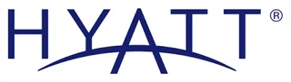
New Delhi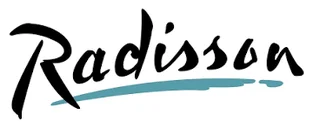
Noida & Hyderabad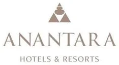
Hotels, Jaipur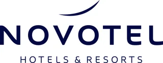
JECC, Jaipur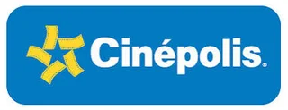
Food courts, 48 multiplexes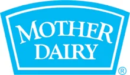
Itawah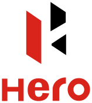
Gurgaon, Neemrana, Jaipur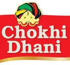
Jaipur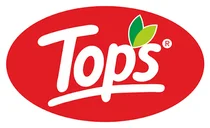
G.D. Foods, 3 plants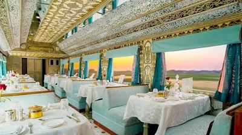
Royal Rajasthan on WheelsGovt. of Rajasthan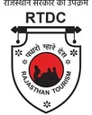
Rajasthan Tourism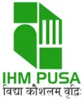
New Delhi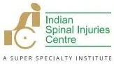
New Delhi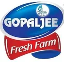
Siyana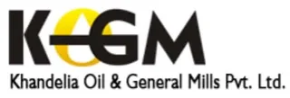
Sri Ganganagar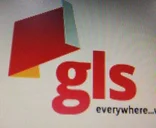
Gurgaon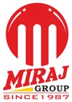
Udaipur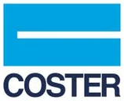
Neemrana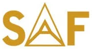
JaipurWho we work with
We believe the quality of our service is paramount for customer satisfaction, and that includes the way we process your certification. Flexibility to meet your requirements is important to us, and we will take your application through to certification as fast as you need.
We design a user-friendly system that suits the level of your employees. We have no preconceived ideas on how you should apply FSMS or HACCP to your business. It is your company, and you know the best way to apply the standard's requirements to it.
Questions
FoSTaC stands for Food Safety Training & Certification. It is FSSAI's programme to train food handlers and Food Safety Supervisors. Training is delivered by approved Training Partners such as VRW, and successful participants receive a FoSTaC certificate.
FSSAI requires licensed food businesses to have at least one trained and certified Food Safety Supervisor for every 25 food handlers on each premises. We can tell you which course level fits your licence and sector.
Yes. We run on-site batches for your team as well as open batches for individuals and small businesses.
It depends on your products, customers and markets. Start with FSSAI compliance; many buyers then ask for HACCP or ISO 22000, while large retailers and exporters often require FSSC 22000 or BRCGS. We will recommend the right one after a short consultation.
No. As consultants we prepare your system and support you through the audit; the certificate itself is issued by an accredited certification body. FoSTaC certificates are issued through FSSAI's programme.
Contact
Tell us about your business and what you need. We usually reply within one working day.